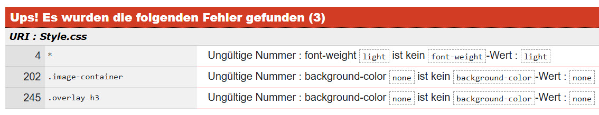

Pecha-Kucha
Reflexion HKB E
Zu Beginn erstellte ich die Ordnerstruktur. Ich definierte die Namen der Subsites und erstellte zu jedem HTML eine CSS-Datei. Ich startete mit dem Head aller HTML-Dateien und verknüpfte das jeweilige CSS. Auch fügte ich den Viewport ein. In der nächsten Lektion entschied ich mich dann jedoch, nur eine CSS-Datei zu haben. Dies lag daran, da es Ann-Christin empfohlen hat und mir im Nachhinein eine bessere Struktur gab. Für den Inhalt der Subsites schrieb ich zuerst überall den Titel auf jede Seite und definierte den Body im CSS mit Hintergrundfarbe, Schriftart und Schriftfarbe.
Weiter setzte ich mich an die Navigation. Da das Logo und das Thema schon standen, war es inhaltlich keine Herausforderung. Auch das Grundgerüst mit Hover stand sehr schnell. Mühe hatte ich dann, als es darum ging, das Design responsiv zu machen. Sobald der Bildschirm kleiner wurde, verliess die Navigation den sichtbaren Bereich. Deshalb ging ich in der Lektion darauf auf Ann-Christin zu und fragte sie um Hilfe. Nach ihrer Rückmeldung habe ich dann versucht, mit flex:wrap einen Umbruch zu generieren, jedoch hat dies nicht funktioniert. Nur das Logo ging auf die nächste Zeile. Ich wusste, es muss eine andere Lösung her und fragte ChatGPT nach Inspirationen. Nach einiger Recherche entschied ich mich für eine Lösung mit Burger-Menü. Dies macht es visuell sehr minimalistisch und funktionierte einwandfrei. Trotzdem musste ich noch einige Anpassungen machen. Zum Beispiel die Position vom Logo, den Thementitel hinzufügen und die Verlinkungen. Ebenfalls gefielen mir die vorgeschlagenen Hover nicht, und ich passte alle Klassennamen an, damit ich sie verstehe und im CSS wiedererkenne. Mir war es wichtig, alles zu verstehen, was ich in meinem Code einfüge. Deshalb schaute ich Videos zu den Befehlen und liess es mir von ChatGPT erklären. So wusste ich auch, wo und wie ich Anpassungen machen muss, damit es meinen Vorstellungen entspricht.
Weiter fügte ich das Lernjournal, den Zeitplan und das Moodboard ein. Das Lernjournal führte ich immer nebenbei und konnte so nur kopieren und einfügen. Für die Galerie wählte ich ein sehr schlichtes und minimalistisches Design mit einem Hover, um Titel sowie die wichtigsten Informationen einzublenden. Dieser Stil zieht sich durch meine ganze Website. Ich achtete auf die Anwendung von Grid und Flexbox, da ich beides sehr spannend finde und auch ausprobieren wollte. Eventuell hätte ich mich hier nur für eines entscheiden können, jedoch finde ich, dass es so auch sehr passend ist, respektive es keine Rolle spielt. Im Allgemeinen war mir wichtig, strukturiert zu arbeiten. Ich gliederte das CSS so, als wäre es die Website von oben nach unten: zum Start allgemeine Definitionen, dann die Navigation, darauf alle Subsites und zum Schluss den Footer. Um die jeweiligen Abschnitte responsiv zu machen, setzte ich zusätzlich zum Viewport @media ein. Diese platzierte ich immer beim dazugehörigen Abschnitt. Dies funktionierte super. Ebenfalls verwendete ich wenn möglich immer Prozentangaben oder em, anstelle von Pixeln. So ist das Design ebenfalls anpassungsfähiger. Weiter achtete ich darauf, mit Klassen und vereinzelt ID zu arbeiten, um mit CSS gezielt zu arbeiten. Damit ich den eigenen Code gut verstehe, kommentierte ich wo nötig. Vor der Abgabe kontrollierte ich meinen CSS-Code sowie alle HTML-Files mit dem Validator. Beim CSS-File wurden mir die drei Fehler angezeit (Bild). Die HTML-Files waren alle ohne Errors oder Warnungen
Zum Schluss kann ich sagen, dass ich sehr zufrieden bin mit meinem Endresultat. Zum Start hatte ich etwas Schwierigkeiten, da ich noch keine korrekte Vorstellung hatte. Hier hätte mir ein Mockup sehr geholfen. Trotzdem entstand im Verlauf des Prozesses eine klare Vision, die ich auch sehr gut umsetzen konnte. Die Website entspricht dem Konzept, passt zum Logo und setzt meine Bilder sehr gut in Szene. Ich konnte mein Wissen in HTML und CSS deutlich verbessern und habe einen deutlich besseren Umgang damit. Die vielen investierten Stunden in dieses Projekt haben sich definitiv gelohnt.